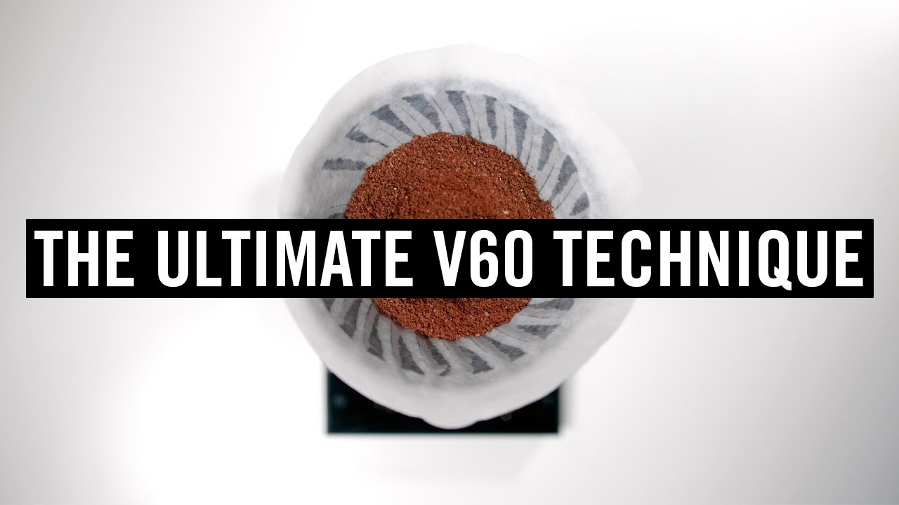

back to homepage
Ingredients
-
Coffee Beans
-
Kettle
-
Scale
-
Grinder
Method
-
Add 30g of ground coffee to the V60. With your finger, create a small well in the middle of the grounds.
-
Start the timer and add 60g of water to bloom the coffee. Pick up and swirl the coffee 5 times.
-
At the 45 second mark, continue pouring until the scale reads 300g. Aim to complete this pour within 30 seconds, finishing at the 1:15 mark. (Hoffman recommends a flow rate of 8g per second if possible.)
-
At the 1:15 minute mark, complete the pour by pouring until the scale reads 500g.
-
At the 1:45 minute mark, use the spoon to stir once clockwise and once anti-clockwise, knocking off the grounds from the sides of the V60.
-
After letting the V60 drain a little, give it 3 more swirls.
-
Allow the water to drip through the grounds entirely, ideally finishing by the 3:30 mark. Remove the filter and serve.
Enjoy